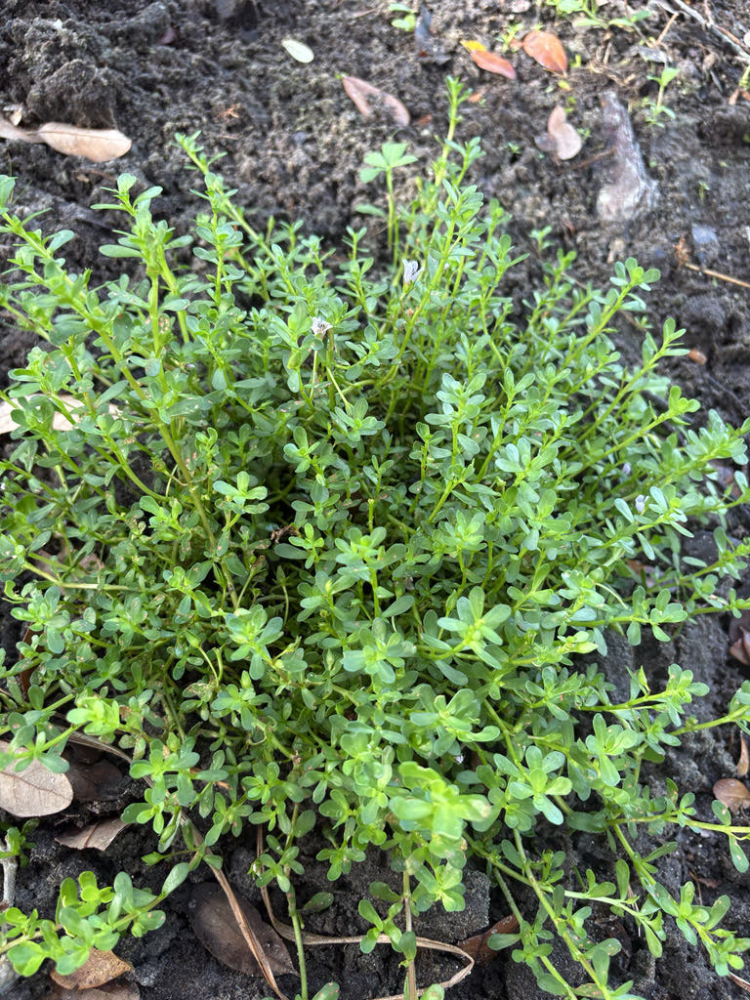

- The same unassuming little plant creeping along this wetland edge has been prescribed in Ayurvedic medicine for over 3,000 years as a memory tonic — the active compounds, called bacosides, are still being studied in clinical trials for their effects on learning and recall.
- For the White Peacock butterfly — a species patrons have documented at the park with iNaturalist — this plant is not just a nectar stop but a nursery. Female White Peacocks lay eggs directly on the leaves, and the caterpillars feed on the foliage.
- One of its alternate names, Water Hyssop, is a bit of a botanical bluff — Bacopa monnieri is not related to hyssop at all. It belongs to the plantain family, Plantaginaceae, the same family as the common yard-weed plantain.
- It can grow with its stems fully submerged — an amphibious habit that lets it colonize pond margins, slow ditches, and mudflats where few other flowering plants can get a foothold.
Bacopa monnieri is native across a remarkably wide swath of the globe — wetlands of the Indian subcontinent, Southeast Asia, Australia, tropical Africa, the Caribbean, and the coastal plain of North America from Maryland to Texas. In Florida it occurs throughout most of the state in fresh and lightly brackish water margins.
Its pantropical range makes pinning down a single 'homeland' genuinely difficult; botanists treat it as native wherever it appears in the Americas, and the Flora of North America notes it is considered native throughout most of its range, though it spreads readily in irrigated agricultural areas. In Florida, the FNPS and UF/IFAS both list it as a Florida native.
- Ayurvedic texts dating to around the 6th century AD describe Bacopa monnieri under the category of medhya rasayana — herbs used to sharpen the intellect and support mental health. It has been in continuous documented medicinal use longer than most of the park's oldest trees have been alive.
- The compounds most associated with its reputation are triterpenoid saponins called bacosides. Modern research is investigating these and related compounds for possible effects on memory, learning, and anxiety; some human trials have reported improvements in memory recall and cognition, but results have been inconsistent across studies and researchers consider the evidence still developing.
- The plant is widely sold today as a dietary supplement marketed toward memory support.
- In Florida's wetlands, the plant plays a straightforward ecological role that has nothing to do with its pharmaceutical fame — it colonizes pond edges, swales, ditches, and mudflats, forming dense low mats that stabilize soft shoreline soils and provide cover for small aquatic animals. It is classified as an obligate wetland plant (OBL), meaning it occurs almost exclusively in wet conditions.
The small flowers punch above their weight for pollinators. Native bees, honeybees, and a range of small butterflies work the blooms steadily through the long flowering season, and because Herb-of-Grace blooms nearly year-round in Southwest Florida, it provides nectar during gaps when other plants are not yet in flower.
For the White Peacock butterfly — a species you may well see at the park — this plant is not just a nectar stop but a nursery. Female White Peacocks lay eggs directly on the leaves, and the caterpillars feed on the foliage. The dense, low mat also offers cover for small frogs, aquatic insects, and juvenile fish along pond margins.
Propagates readily by seed, stem cuttings, and division of rooted mats. Stems root at the nodes wherever they contact moist soil or shallow water, which is the plant's most efficient means of spreading locally. Seeds are small, numerous, and produced in persistent capsules.
Small — about two-thirds of an inch across — and bell-shaped, with five lobes that are white to pale pink with a distinctive violet center. Flowers are borne singly in the leaf axils on short stalks. In Southwest Florida, flowering occurs virtually year-round; farther north it tapers off in winter.
Inconspicuous oval capsules, much shorter than the sepals. Each capsule ripens to release small seeds. Fruiting can be found June through November, often overlapping with new flowers on the same plant.
Succulent, obovate to spatulate — widest near the tip, narrowing toward the base — and arranged in opposite pairs along the stem. Leaves are small (roughly half an inch to five-eighths of an inch long), bright green, and slightly fleshy, an adaptation that helps the plant tolerate both inundation and occasional drying.
Slender, succulent, and bright green, creeping along the ground or floating at the water's surface. Stems root freely at nodes in contact with wet soil, allowing the plant to spread into dense, carpet-like mats only a few inches tall.
Get low — this plant rarely reaches your ankle. Look for a dense bright-green mat of small, paddle-shaped succulent leaves at the water's edge. Amid the leaves you should find tiny white to pale-pink bell flowers, each with a violet center, sitting singly on short stalks right in the leaf axils. Check the stems at the nodes for the fine white rootlets the plant sends into wet soil as it creeps.
If White Peacock butterflies are flying nearby, scan the leaves carefully for small pale caterpillars.
Eating a large quantity on an empty stomach can cause nausea and gastrointestinal discomfort — the same saponins associated with the plant's medicinal reputation are the likely culprit.
The young leaves have a long history of use as food and in traditional preparations in South Asian cuisines and Ayurvedic practice, but that history of traditional use is not a recommendation to eat plants from the park collection. UF/IFAS lists the plant as non-toxic, and it is not considered toxic to dogs or cats.
Herb-of-Grace is classified as an obligate wetland plant (OBL) by the U.S. Army Corps of Engineers National Wetland Plant List, meaning it occurs almost exclusively in wetland conditions. It is a common inclusion in Florida wetland restoration and mitigation plantings.
Do not confuse Bacopa monnieri with the ornamental Sutera cordata — also sold under the trade name 'Bacopa' in garden centers — which is an unrelated South African plant in a different family. The two look nothing alike in person, but the shared retail name causes frequent confusion.


- © Randall Carter (CC-BY-NC), via iNaturalist
- © Hailee Alenduff (CC-BY-NC), via iNaturalist